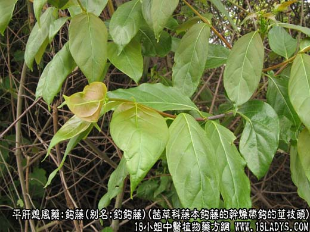
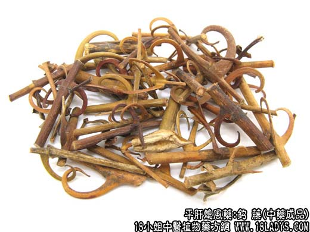
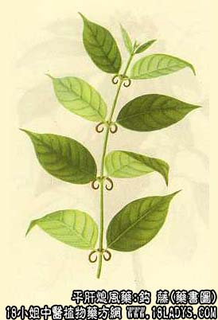

钩藤为常用中药。始载《名医别录》，列为下品。本品的刺曲如钓钩故名，原植物来源较多。商品主要有钩藤和华钩藤两类。
别名：勾藤、勾勾、钓钩藤。
来源：为茜草科木质藤本植物钩藤及华钩藤的干燥带钩的茎枝。均为野生。
产地：1、钩藤。主产于广西、浙江、江西、湖南、福建、安徽、广东等地。
2、华钩藤。主产于四川、云南、贵州、湖北等地。
性状鉴别：1、钩藤。为带茎的钩，茎呈圆柱形，长约2~3厘米，直径约3毫米。表面红棕色至紫棕色，茎上有环状的茎节，微凸起，节上对生两个向下弯曲的勾，形似船锚；亦有仅生单钩的，对面为凸起的疤痕，钩大小不一，基部稍宽呈扁圆形，直径2~3毫米，先端狭尖向内弯曲。通体光滑而坚硬。体轻质坚韧，不易折断，断面中问髓部呈黄白色，松软如海绵，外圈坚硬，棕红色。气无，味淡。
以双钩，茎细，钩肥状结实，茎的两端与钩剪平（双平头）光滑，色紫棕者为佳。
2、华钩藤。性状与钩藤基本相似，所不同者，茎呈方柱形，有棱，略粗大。表面灰棕色或灰绿色，钩的基部稍阔，习惯认为钩藤的质量比华钩藤为好。
主要成分：含钩藤硷及异钩藤硷，均属吲哚类生物硷。
功效与作用：平肝止痉，其原理为：
1、降血压。作用较明显，尤以混钩（包括单钩、双钩及上下二端相连的枝条）降压作用较强，维持时间也较长，而老枝的降压作用极短暂。一般茎、枝的降压程度与混钩比较相差不显著，但降压维持时间茎、枝较钩为短。
2、镇静。有明显镇静作用，且能制止豚鼠实验性癫痫的发作。钩藤的止痉作用与此有关。
此外，近年来还发现钩藤对引起呼吸道感染的病毒如腺病毒、亚洲甲型流感病毒和仙台病毒等有较好的抑制作用。
炮制：生用。
性味：甘，微寒。
归经：入肝、心包经。
功能：清热镇惊、平肝熄风。
主治：惊痫抽搐，头目眩晕。
临床应用：1、用于热证抽搐。无论小儿或成分的高热抽搐，都常用钩藤。小儿急惊风尤为多用，在小儿高热而有抽搐倾向者，用钩藤有预防作用，对程度较轻的抽搐也有止痉作用。但对抽搐较重者，钩藤的止痉作用较弱。又单用效力不甚显著，须配羚羊角或犀角、天麻、全蝎，以加强清热，止痉作用，方如羚角钩藤汤。
2、用于肝风晕眩，治高血压所致的头晕眩，取其有降血压的镇静作用。对改善肢端麻木感也有一定帮助。常配桑叶、菊花、石决明、白芍等。如肝阳上亢较显著，兼有面红目赤、心烦易怒、苔黄、脉弦数，则更配石膏清热、茯神镇静，方入钩藤散。
此外，近年来有报道试用钩藤配麻黄，五味子水煎服治痰喘型慢性气管炎，有一定效果，可能主要是通过镇静作用而加强麻黄的平喘作用。
使用注意：1、前人经验认为钩藤久煮无力，宜后下，一二沸即起。现代实验证实钩藤煮沸20分钟以上，其降压作用即降低，因此，后下是有科学根据的；
2、过去有认为双钩效力比单钩强，但实际上两者无大差别。只要取钩多枝少者药效就好。治小儿急惊风有时单用钩藤。
3、茎枝降压作用与钩相差不显著，但持续时间较短；老枝降压作用微弱，持续时间短暂。
用量：6~15g，大剂可用至24~30g。
处方举例：钩藤散（《本事方》）：钩藤、菊花、防风、党参、茯神、半夏、陈皮、麦冬各13g，生石膏30g，甘草7.3g，共研细末，每服12g，清水煎，去渣服。